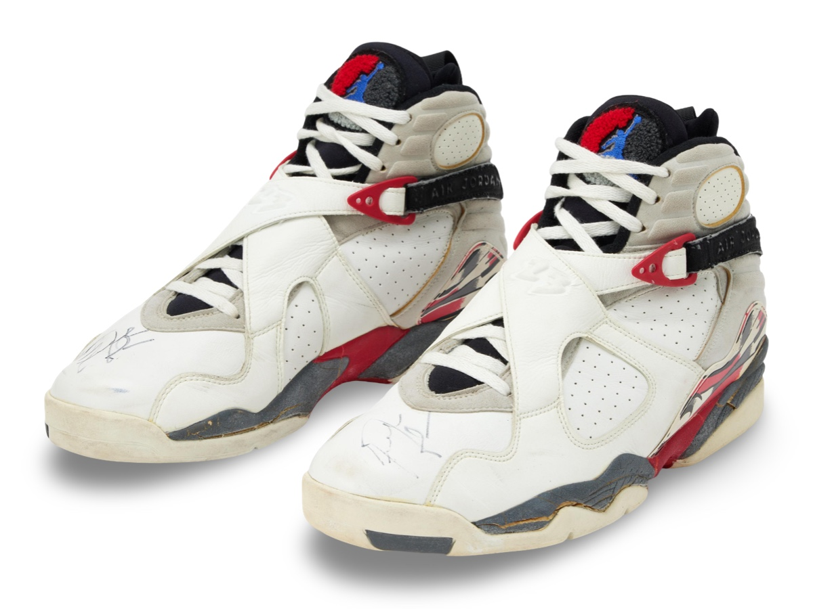
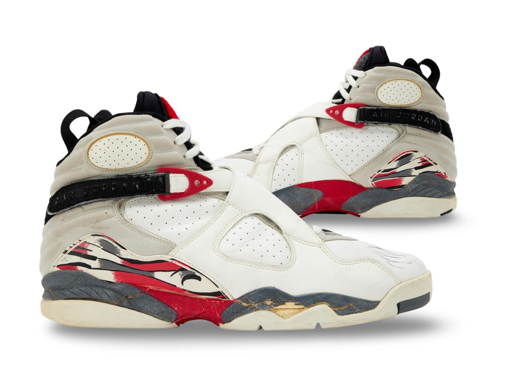
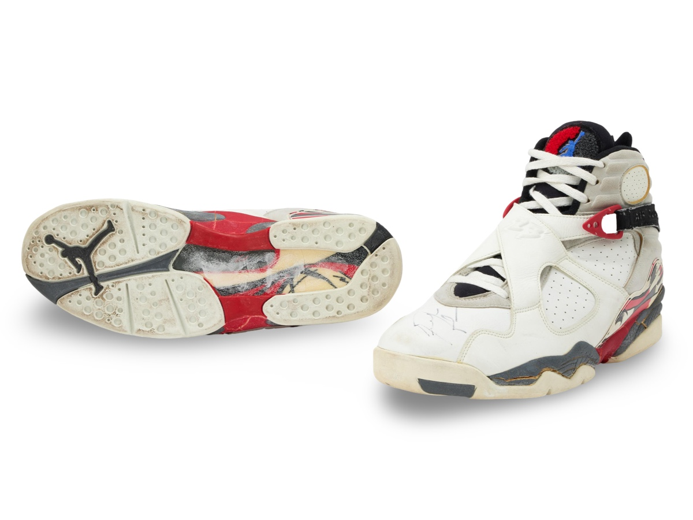

Air Jordan VIII attributed to game wear verse Detroit.
Worn during Jordan's last regular season home game at Chicago
Stadium.
Public Sale
- Auction House:Infinite Auctions
- Sale Date: November 22, 2025
- Lot #: 11
- Sale Price: $21,248
View Sale Listing - 2025→ View Sale Listing - 2024→ View Sale Listing - 2015→
Photo Match Details
- Photo-Matched: Yes
- Games Photo-Matched: 1
- Photo-Matched By:MJA
Research & Provenance
- A letter of provenance accompanies these shoes from Brian Kuhn a former ticket agent for the Chicago Bulls.
- The shoes were sold previously with an apparent verification and were not deemed conclusive.
- Through archive research and additional negatives and film the shoes are now conclusive to the April 22 game.